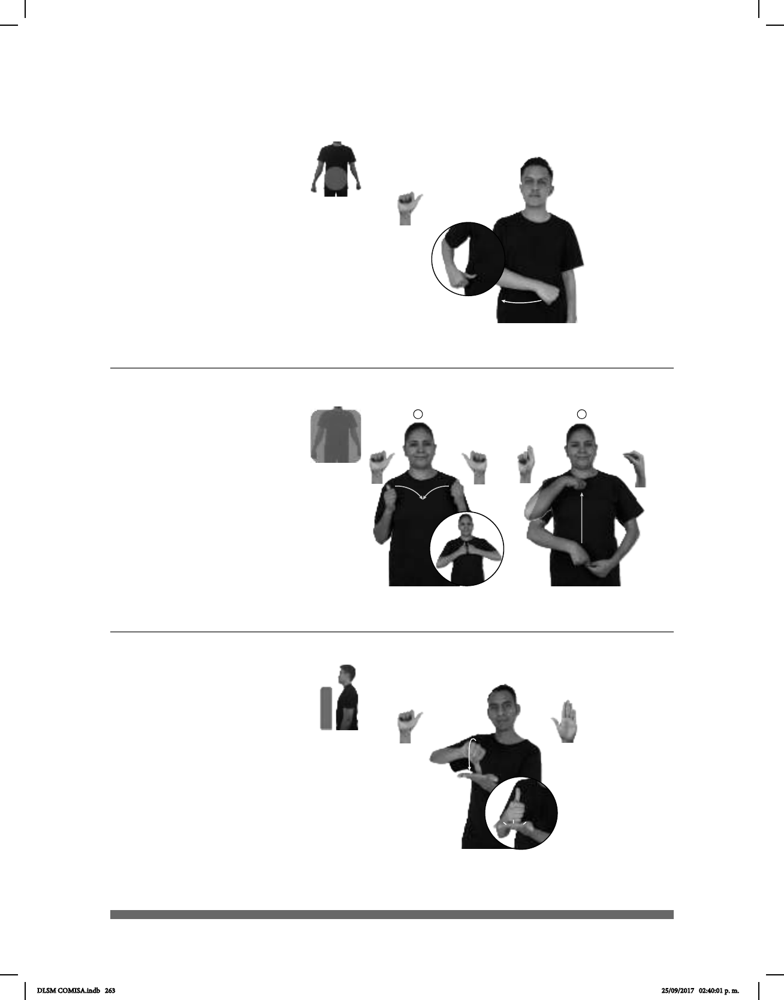

263
1
2
(A-92)
(A-91)
CESÁREA pro-YO NACER YA
Yo nací por cesárea.
CHAMARRA PIEL VER FORMAL
Las chamarras de cuero se ven formales.
Seña: SB
MD A.1, MB B-P.2
MD la palma inicia hacia
la izquierda y termina hacia dentro. MB
palma hacia arriba.
A la altura del pecho. MD
sobre MB.
El antebrazo de MD gira
y cambia la orientación de la mano,
pasa de mostrar la palma a mostrar el
dorso.
adj. y sust. Que es de baja
estatura.
Para la comunidad sor-
(A-93)
pro-YO MÁS CHAPARRO DENTRO pos-MI FAMILIA
área
Yo soy el más chaparro de mi familia.
Seña: SM
A.1
Palma hacia adentro.
Sobre el abdomen.
Recto de izquierda a
derecha.
Simula el corte
que se realiza en la operación.
sust. f. Operación
una incisión en las paredes
abdominal y uterina.
Seña: SC: I. SS; II. SB
I. A.1; II. MD Q.11,
MB Pico P.1
I. Las palmas inician
hacia el centro y terminan hacia dentro;
II. MD y MB palmas hacia dentro.
I. A la altura de los
hombros; II. MD sobre la cintura y se
desliza hacia el cuello. MB sobre la
cintura.
I. Las manos se
mueven formando un arco de afuera
hacia dentro; II. MD recto.
sust. f. Prenda de vestir
que cubre el tórax, desde el cuello hasta
la cintura o la cadera; tiene manga, se
abrocha o se cierra por adelante y se
usa sobre la camisa o el vestido.
DLSM COMISA.indb 263 25/09/2017 02:40:01 p. m.